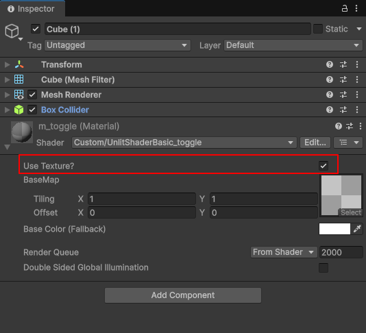

| shader_feature 지시어로 토글(체크박스)로 셰이더의 기능을 On/Off 할수 있습니다. 메테리얼 인스펙터에서 체크박스를 끄면, 유니티는 실행 시점에 불필요한 연산을 전혀 하지 않게 됩니다. 체크 된것과 체크 안된것을 비교 하려면 메트리얼을 2개 만들어서 하나는 체크된 버전, 하나는 체크 안된 버전의 메트리얼을 준비 해야 합니다. 다음 예제는 텍스쳐를 적용 할지, 안할지 토글하여 선택 할수 있습니다. 1. 퍼로퍼티 추가 [Toggle] 속성을 사용하여 인스펙터에 체크박스를 생성합니다. 괄호 안의 _USE_TEX_ON은 실제 셰이더 키워드 이름이 됩니다. Properties
{ [Toggle(_USE_TEX_ON)] _UseTex ("Use Texture?", Float) = 1.0 _BaseMap("BaseMap", 2D) = "white" {} _BaseColor("Base Color (Fallback)", Color) = (1, 1, 1, 1) } 2. 셰이더 키워드 선언 (텍스처 사용 여부 분기) Pass
{ HLSLPROGRAM #pragma vertex vert #pragma fragment frag #pragma shader_feature _USE_TEX_ON shader_feature는 유니티 셰이더에서 특정 기능(예: 텍스처 사용 여부, 프레넬 활성화 등)을 선택적으로 포함하거나 제외할 때 사용하는 지시어입니다.
3. 체크박스가 켜져 있을 때만 텍스처를 샘플링합니다. half3 frag(Varyings IN) : SV_Target
{ ...... #if defined(_USE_TEX_ON) albedo *= SAMPLE_TEXTURE2D(_BaseMap, sampler_BaseMap, TRANSFORM_TEX(IN.uv, _BaseMap)).rgb; #endif ..... return color; } 결론) 런타임과 빌드시 사용은 안하는게 좋겠습니다. 셰이더 변종(Variant) 유실 (빌드 시 문제) 에디터에서는 잘 작동하는데, 실제 폰이나 PC로 빌드했을 때 토글이 작동하지 않고 핑크색이나 검은색으로 나오는 경우가 있습니다.
UnlitShaderBasic_toggle.shader 파일 Shader "Custom/UnlitShaderBasic_toggle"
{ Properties { // [Toggle] 속성을 사용하여 인스펙터에 체크박스를 생성합니다. // 괄호 안의 _USE_TEX_ON은 실제 셰이더 키워드 이름이 됩니다. [Toggle(_USE_TEX_ON)] _UseTex ("Use Texture?", Float) = 1.0 _BaseMap("BaseMap", 2D) = "white" {} _BaseColor("Base Color (Fallback)", Color) = (1, 1, 1, 1) } SubShader { Tags { "RenderType" = "Opaque" "RenderPipeline" = "UniversalPipeline" } Pass { HLSLPROGRAM #pragma vertex vert #pragma fragment frag // 셰이더 키워드 선언 (텍스처 사용 여부 분기) #pragma shader_feature _USE_TEX_ON #include "Packages/com.unity.render-pipelines.universal/ShaderLibrary/Core.hlsl" #include "Packages/com.unity.render-pipelines.universal/ShaderLibrary/Lighting.hlsl" struct Attributes { float4 positionOS : POSITION; float2 uv : TEXCOORD0; float3 normalOS : NORMAL; }; struct Varyings { float4 positionHCS : SV_POSITION; float2 uv : TEXCOORD0; float3 normalWS : NORMAL; }; TEXTURE2D(_BaseMap); SAMPLER(sampler_BaseMap); CBUFFER_START(UnityPerMaterial) float4 _BaseMap_ST; half4 _BaseColor; CBUFFER_END Varyings vert(Attributes IN) { Varyings OUT; OUT.positionHCS = TransformObjectToHClip(IN.positionOS.xyz); OUT.uv = IN.uv; // Normal 변환 시 TransformObjectToWorldNormal을 사용하는 것이 더 정확합니다. OUT.normalWS = TransformObjectToWorldNormal(IN.normalOS); return OUT; } half3 frag(Varyings IN) : SV_Target { // 1. 조명 데이터 가져오기 Light light = GetMainLight(); float3 lightDir = normalize(light.direction); float3 normalWS = normalize(IN.normalWS); // 2. 조명 계산 (NdotL) float NdotL = saturate(dot(normalWS, lightDir)); float3 directLight = NdotL * light.color * light.shadowAttenuation; half3 ambient = unity_AmbientSky.rgb; // 3. 알베도(색상) 결정 (토글 분기) half3 albedo = _BaseColor.rgb; #if defined(_USE_TEX_ON) // 체크박스가 켜져 있을 때만 텍스처를 샘플링합니다. albedo *= SAMPLE_TEXTURE2D(_BaseMap, sampler_BaseMap, TRANSFORM_TEX(IN.uv, _BaseMap)).rgb; #endif // 4. 최종 색상 조합 half3 color = albedo * (directLight + ambient); return color; } ENDHLSL } } } "Use Texture"를 토글 하여, 텍스쳐를 적용 할수 있습니다.  |